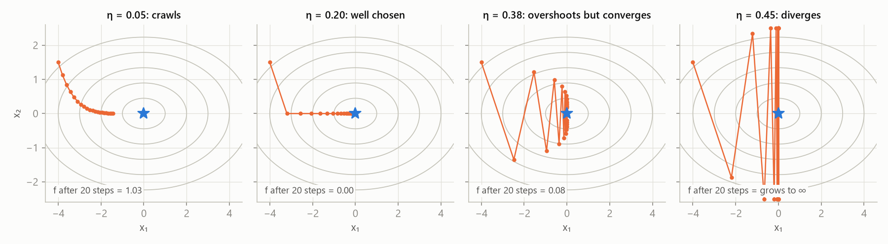
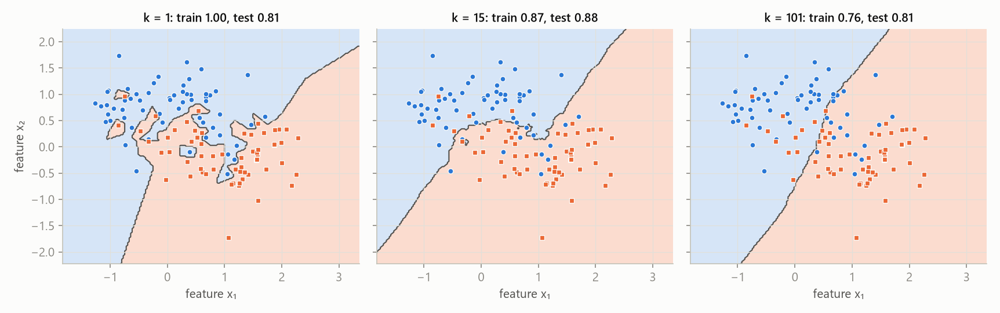

MLR – exam notes · Introduction, branches of ML and optimization – MLR · https://balnerm.github.io/pripravy/mlr/en/01_uvod.html
Lecture 1
Introduction, branches of machine learning and optimization
What the words artificial intelligence, machine learning and deep learning actually mean. What types of tasks machine learning solves and why almost every method in the course can be written as finding the minimum of some function. Optimization is the “language” in which all the other lectures are written. At the end of the chapter there is a review of the simplest algorithms (k-NN, k-means, UPGMA) from the bachelor course.
Today most new code is written by AI agents (Google reports 75 % of new code, Anthropic over 80 %) and a human only gives the task and checks the result. What does not go away is understanding the methods: only with it can you tell the agent what to build and see that a result cannot be right. “Someone has to be able to tell almost right from right.” That is why in the course k-NN, forward selection or backpropagation are written once by hand in NumPy – to understand the principle, not to deploy it.
AI, ML and DL: what belongs where
Artificial intelligence is an umbrella term for systems that perform tasks that would otherwise need human intelligence – understanding language, making decisions, driving a car.
an “umbrella” over everything that behaves smartly. Machine learning is just one of the ways to build AI.
Machine learning is an approach in which a computer learns rules (a model) from data: a human provides data and correct answers and the algorithm derives rules from them, which it then applies to new data.
in classic programming a human writes the rules (data + rules → answers, e.g. sorting, tax calculation, an FIR filter). In machine learning it is the other way round: data + answers → rules (spam filter, image classification, language models).
Deep learning is machine learning with neural networks that have many layers and learn the features automatically straight from raw data – at the cost of a lot of data and computing power.
classic ML needs hand-designed features but works with little data; DL finds the features itself but wants a lot of data and GPUs. Relationship: DL ⊂ ML ⊂ AI.
| classic machine learning | deep learning | |
|---|---|---|
| features | designed by hand (by a human) | learned automatically |
| amount of data | little is enough | needs a lot |
| algorithms | traditional (k-NN, SVM, trees…) | neural networks |
Related fields: data science (statistics + ML + computer science, the goal is to understand data; ML is one of its tools), computer vision (information from images and video – detection, segmentation, medical images; today mostly DL) and robotics (AI + vision + control + mechanics).
Narrow (weak) AI is a system built for one specific task (spam filter, recommender, image classifier). Artificial general intelligence (AGI, strong AI) is a hypothetical system that would learn and use knowledge across fields and could handle any intellectual task a human can do.
everything in this course is narrow AI. AGI is still a theoretical idea; today large language models come closest to it.
Turing test (1950): if the judge cannot tell the machine’s answers from a human’s, the machine behaves intelligently. Language models pass it today – but the test measures behaviour, not understanding. Whether machines “think” or only simulate thinking is an open question the course does not need to answer.
Branches of machine learning
The branches differ in what information we give the algorithm: correct answers (labels), nothing, or a reward.
Supervised learning is learning from labelled data: for every input \(\mathbf x\) we know the correct output \(y\). The goal is to find a mapping \(f: \mathbf x \mapsto y\) that generalizes to data not seen before.
a “teacher” shows many examples with their solution (image + “cat”) and the model learns from them to answer new examples too.
Regression is supervised learning with a continuous output \(y\) (house price, cholesterol level); we look for \(\hat y = f(\mathbf x)\) that minimizes the error between \(\hat y\) and \(y\). Classification is supervised learning with a discrete output – one of several classes (cat/dog, healthy/sick); we look for a decision function that separates the classes.
regression answers “how much?”, classification “what is it?”.
Unsupervised learning is learning from unlabelled data (we only have \(\mathbf x\), no \(y\)); the goal is to find hidden structure in the data. Main branches: clustering (group similar samples), dimensionality reduction (fewer features, same structure) and generative models (learn the data distribution and generate new samples).
nobody says what is correct – the algorithm has to find on its own how the data are organized. In clustering “similar = close”, so everything depends on the chosen distance.
Reinforcement learning is learning in which an agent interacts with an environment: it observes a state, takes an action and gets a reward. The goal is a strategy (policy) that maximizes the total (cumulative) reward.
trial-and-error learning with “carrot and stick” (robots in a maze, AlphaGo, Atari games). It is not covered in the course – it comes back only by name in RLHF (fine-tuning chat models with human feedback).
Self-supervised learning is learning in which pseudo-labels are created from the data themselves: the model solves a helper (pretext) task to learn a useful representation for later tasks.
the data “make” the label themselves: we hide a word and the model guesses it, predicts the next word (LLM), the next video frame or missing pixels; contrastive learning pulls similar examples together and pushes different ones apart. No manual annotation is needed.
| branch | what the algorithm gets | typical task |
|---|---|---|
| supervised – regression | \(\mathbf x\) and continuous \(y\) | price estimate, weather forecast, life expectancy |
| supervised – classification | \(\mathbf x\) and class \(y\) | diagnosis, spam, fraudulent transactions |
| unsupervised | only \(\mathbf x\) | customer segmentation, cell types, visualization, image generation |
| reinforcement | reward for actions | robot, game, control |
| self-supervised | \(\mathbf x\), label made from the data | next-word prediction (LLM), masked word |
Large language models (LLMs) are trained on huge amounts of text to predict the next token; the label is the next word itself, so this is self-supervised learning. Generation = predict, append, repeat. A chat model answers (instead of just continuing the text) thanks to a second phase: fine-tuning on instructions and RLHF.
Optimization: the common language of all methods
Optimization = we change the inputs to get the best possible output: we minimize costs or maximize a reward. Imagine a landscape and look for the lowest valley; constraints say where you are allowed to step. Example from the lecture: you are mixing hot and cold water. You have two taps (inputs), the output is how pleasant the water is, and there is no formula or graph – only your hand under the stream. Hyperparameter tuning works the same way: you try a setting, measure, adjust.
An optimization problem is the search for the point \(\mathbf x^\ast = \arg\min_{\mathbf x \in X} f(\mathbf x)\), i.e. the value of the variables \(\mathbf x\) for which the objective function \(f\) is smallest on the feasible set \(X\) given by the constraints. Every problem has three parts: variables (what we may change), the objective function (one number we push down) and constraints (they define the feasible set).
“what can I change, what do I want to be as small as possible, and what must I not break”. Convention: we always minimize – maximizing \(u(\mathbf x)\) is turned into minimizing \(-u(\mathbf x)\) (same minimizer, opposite value).
| \(\mathbf x\) | variables – speed of a car, flow rates of taps, model weights |
| \(f(\mathbf x)\) | objective (target, cost) function – fuel use, discomfort, model loss |
| \(g_i \le 0\) | inequality constraints (e.g. \(H \le 5\) l/min) |
| \(h_j = 0\) | equality constraints (e.g. “the glass is full”) |
| \(X\) | feasible set – points that satisfy all constraints |
The minimum \(p^\ast = \min f\) is a number – the smallest reachable value of the objective function. The minimizer \(\mathbf x^\ast = \arg\min f\) is a point (values of the variables) where the minimum is reached; there can be more than one.
the minimum says “how well it can go”, the minimizer “how to set it”. In model training the minimum is the lowest loss and the minimizer is the trained weights.
A constraint is active at the optimum \(\mathbf x^\ast\) if it holds there with equality (\(g_i(\mathbf x^\ast) = 0\)). If the unconstrained minimum lies outside the feasible set, the optimum is “pushed” onto its boundary and the corresponding constraint is active.
an active constraint is what “stopped” the optimum – if you relaxed it, you would get a better result. An inactive constraint does not affect the result at all.
Flow rates \(H, C\) (l/min), hot water 60 °C, cold 10 °C. Temperature \(T = (60H + 10C)/(H + C)\), flow \(F = H + C\). Objective function \(J = (T - 38.5)^2 + (F - 12)^2\), feasible set \(0 \le H \le 5,\ C \ge 0\).
- Without constraints: \(H + C = 12\) and \(T = 38.5\) ⇒ \(H = 6.84\), \(C = 5.16\), \(J = 0\).
- Boiler limited to \(H \le 5\): the unconstrained optimum is infeasible, the optimum moves to the boundary \(H = 5\) and \(C = 4.08\): the water is 37.5 °C and 9.1 l/min, \(J = 9.5\) instead of 0. The constraint \(H \le 5\) is active.
- Fuel-use curve with the constraint \(50 \le v \le 130\) km/h: the optimum \(v^\ast = 89.4\) lies inside, the constraint is inactive.
Hard constraint or soft penalty?
Constraint (“must not be broken”): safety limit, budget, physical law – it can make the problem unsolvable. Term in the objective function (“the less, the better”): \(f(\mathbf x) = \text{error} + \lambda\cdot\text{penalty}\); \(\lambda\) says how much we care about it and only shifts the optimum. Both ways are possible and give different answers – e.g. ridge regression (lecture 4) turns the budget \(\|\mathbf w\|_2^2 \le t\) into the penalty \(\lambda\|\mathbf w\|_2^2\).
Minimize only the training error – and the model memorizes the data. Maximize only sensitivity – and everyone will be “sick”. Choosing the objective function is the analyst’s decision.
Convexity: when optimization is easy
A function \(f\) is convex if for all \(\mathbf x_1, \mathbf x_2\) and \(\theta \in [0,1]\) it holds that \(f(\theta\mathbf x_1 + (1-\theta)\mathbf x_2) \le \theta f(\mathbf x_1) + (1-\theta) f(\mathbf x_2)\). A set \(C\) is convex if together with any two points it also contains the whole line segment between them.
the graph of a convex function lies below each of its chords (a “bowl”) and has no local minima other than the global one. A convex set has no “bays” where a minimum could hide.
A local minimum is a point that is the best in its neighbourhood; a global minimum is the best in the whole feasible set. In a convex problem (convex \(f\) on a convex set) every local minimum is also global.
a local method (e.g. gradient descent) ends in the valley where it started – and cannot tell whether a deeper one exists. A convex problem has only one valley. But convexity does not guarantee that a minimizer exists (\(\min_x e^x\) does not exist), that it is unique, or that the model is correct.
| problem class / method | what it means | where in the course |
|---|---|---|
| closed form | a formula, no iterations | ridge regression (matrix inverse), mean and variance, PCA (eigenvectors) |
| gradient methods | the derivative says where to go | logistic regression, neural networks |
| linear programming | linear \(f\) and constraints | L1 regression (least absolute deviations) |
| quadratic programming | quadratic \(f\), linear constraints | soft-margin SVM |
| convex | easy – local = global | LASSO, logistic regression |
| non-convex | hard – heuristics without guarantees | deep networks, k-means, hyperparameter tuning |
| discrete | usually NP-hard | feature selection |
The first two rows are methods, the others are properties of the problem – and the problem chooses the method.
Gradient descent
The gradient \(\nabla f(\mathbf x) = \left(\frac{\partial f}{\partial x_1}, \dots, \frac{\partial f}{\partial x_n}\right)\) is the vector of partial derivatives of the function \(f\); it points in the direction of the steepest increase of the function and has the same shape (number of components) as \(\mathbf x\).
an arrow pointing “uphill”. When we want to go down, we go against it. The function \(f\) returns a scalar, the gradient is a vector with as many components as there are variables.
Gradient descent is an iterative method that in every step moves the variables against the direction of the gradient: \(\mathbf x^{(t+1)} = \mathbf x^{(t)} - \eta\,\nabla f(\mathbf x^{(t)})\), where \(\eta \gt 0\) is the learning rate (step size).
“walk downhill in small steps until the ground flattens out”. We only need to compute the derivative at the current point – we do not need a formula for the solution. This is exactly how neural networks are trained.
At low speed idle losses and a short gear ratio cost fuel, at high speed it is air resistance ⇒ the optimum is somewhere in between. Model: \(\text{Fuel}(v) = A/v + Bv + C\) with \(A = 400\), \(B = 0.05\).
- Probing: we measure fuel use at several speeds – blindly, without a formula.
- Closed form: \(\text{Fuel}'(v) = -A/v^2 + B = 0\) ⇒ \(v^\ast = \sqrt{A/B} = \sqrt{8000} \approx 89.4\) km/h. Second derivative \(2A/v^3 \gt 0\) ⇒ a single minimum; \(\text{Fuel}(v^\ast) = 2\sqrt{AB} + C\). A luxury – it needs a formula.
- Gradient descent: start \(v_0 = 30\) km/h, \(\eta = 200\). \(\text{Fuel}'(30) = -400/900 + 0.05 = -0.394\) ⇒ \(v_1 = 30 + 200\cdot 0.394 = 108.9\) (it overshot the optimum). Then \(\text{Fuel}'(108.9) = +0.016\) ⇒ \(v_2 = 105.6\), \(v_3 = 102.8\)… after 30 steps \(v \approx 89.5\). It only needs the derivative at a point.
When to stop? Small gradient \(\|\nabla f\| \lt \varepsilon\), small change of \(f\) or \(\mathbf x\), a cap on the number of iterations; when training a model, the validation error (lecture 2). But a small gradient only means a stationary point – it can also be a saddle or a plateau. Only for a convex problem is it surely the global minimum.

The learning rate decides everything. For this function the update per component is \(x_i \leftarrow (1 - \eta q_i)\,x_i\) with \(q_1 = 1\), \(q_2 = 5\): every step multiplies the error by \(|1 - \eta q_i|\). Descent converges exactly when \(|1 - \eta q_i| \lt 1\) for all \(i\), i.e. \(\eta \lt 2/L\), where \(L = \max_i q_i = 5\) is the largest curvature ⇒ \(\eta \lt 0.4\). A small \(\eta\) (0.05) crawls, 0.2 is ideal, 0.38 oscillates in the steep direction, 0.45 diverges.
| parameter | what it means | ↑ when I increase it | ↓ when I decrease it |
|---|---|---|---|
| learning rate \(\eta\) | how far I go against the gradient in one step | faster progress, but from \(\eta \gt 2/L\) oscillation and divergence (loss grows to ∞) | stable but very slow “crawling”; with a limited number of iterations it does not reach the minimum |
| number of iterations / tolerance \(\varepsilon\) | when I stop | more iterations = more exact minimum, more computation (for a model, risk of overfitting) | earlier stop, may not converge |
| starting point \(\mathbf x^{(0)}\) | where I start | does not matter for a convex problem; for a non-convex one it decides in which local minimum I end up | |
the largest \(\eta\) for which the loss still decreases steadily (in practice you try orders of magnitude 0.1, 0.01, 0.001).
The variables are the parameters (weights) \(\mathbf w\), not the data: a line has 2, a small network \(10^6\), an LLM \(10^{11}\). The objective function is the loss averaged over the training set. Constraints usually do not exist – plain gradient descent is enough. There is no formula for \(\mathbf w^\ast\), but the loss and its gradient at a point are all that descent needs. Even k-means is optimization: an objective function, an ugly landscape and a heuristic.
Almost every ML method minimizes some function; gradient descent goes against the gradient with a step \(\eta\) that must be smaller than \(2/L\).
Review: nearest neighbours (k-NN)
The k-NN classifier labels a new sample \(\mathbf x^\ast\) by finding the \(k\) training samples closest to it (by the chosen distance) and giving it the majority class among them; for regression it returns the mean of their values. For \(k = 1\) it is 1-NN: it copies the label of the nearest point.
“tell me who your neighbours are and I will tell you who you are”. It has no training phase (lazy learning) – the whole “model” is the stored training data.
Properties: sensitive to noise, feature scale and outliers (the distance is dominated by the feature with the largest numbers – hence standardization); searching for neighbours is expensive for large \(n\) (a kd-tree helps). An odd \(k\) prevents ties with two classes.
| \(\|\cdot\|_2\) | Euclidean distance (“as the crow flies”) |
| \(\|\cdot\|_1\) | Manhattan distance (sum of differences along the axes) |
| \(\|\cdot\|_\infty\) | Chebyshev distance (the largest difference in one axis) |
Example: \(\mathbf a = (1, 1)\), \(\mathbf b = (2, 3)\) ⇒ \(\mathbf x = (-1, -2)\): \(\|\mathbf x\|_2 = \sqrt5 \approx 2.24\), \(\|\mathbf x\|_1 = 3\), \(\|\mathbf x\|_\infty = 2\).
Class A: (1, 2), (1.5, 1.8), (1, 0.6); class B: (5, 8), (8, 8), (9, 11). New sample (2, 3), Euclidean distance:
| point | class | distance from (2, 3) |
|---|---|---|
| (1.5, 1.8) | A | 1.30 |
| (1, 2) | A | 1.41 |
| (1, 0.6) | A | 2.60 |
| (5, 8) | B | 5.83 |
| (8, 8) | B | 7.81 |
| (9, 11) | B | 10.63 |
\(k = 3\): the three nearest are A, A, A ⇒ class A. \(k = 5\): vote 3 : 2, still A.

\(k\) regularizes the model (bias–variance trade-off). \(k = 1\): the boundary traces every point including noise, training accuracy 1.00 but test only 0.81 – overfitting. \(k = 15\): smooth boundary, best test (0.88). \(k = 101\) (almost all the data): the boundary approaches a straight line, the model ignores the shape of the classes – underfitting (test 0.81).
| parameter | what it means | ↑ when I increase it | ↓ when I decrease it |
|---|---|---|---|
| number of neighbours \(k\) | how many nearest training points vote | smoother boundary, lower variance, higher bias; for \(k \to n\) it always predicts the majority class (underfitting) | more jagged boundary, copies the noise; \(k = 1\) has training error 0 (overfitting) |
| metric (L1, L2, L∞, cosine…) | how “closeness” is measured | changes the shape of the neighbourhood and so the boundary; L1 is less sensitive to one large deviation in one axis; must always be combined with feature scaling | |
| vote weights (uniform / distance) | do closer neighbours have a larger weight? | distance weighting reduces the influence of farther neighbours for large \(k\) | |
\(k\) is tuned by cross-validation (lecture 2); odd for two classes to avoid a tie.
Review: k-means and UPGMA
k-means is a clustering algorithm that splits \(n\) points into \(k\) clusters, each represented by its mean (centroid) \(\boldsymbol\mu_j\), and minimizes the inertia – the sum of squared distances of the points from the centroid of their cluster: \(J = \sum_{j=1}^{k}\sum_{\mathbf x_i \in C_j}\|\mathbf x_i - \boldsymbol\mu_j\|_2^2\).
find \(k\) “centres of mass” so that every point has its centre as close as possible. The problem is non-convex – the algorithm finds only a local minimum that depends on the start.
- Initialize \(k\) centroids (e.g. randomly chosen samples).
- Assignment: assign each point to the nearest centroid.
- Update: move each centroid to the mean of its points.
- Repeat 2–3 until nothing changes.
Each assignment and update step can only decrease \(J\), so the algorithm always converges – to a local minimum. That is why it is run several times from different starts.
The same six points, \(k = 2\), initial centroids \(\boldsymbol\mu_1 = (1, 2)\), \(\boldsymbol\mu_2 = (5, 8)\). Assignment: (1, 2), (1.5, 1.8), (1, 0.6) → cluster 1; (5, 8), (8, 8), (9, 11) → cluster 2; \(J = 36.25\). Update: \(\boldsymbol\mu_1 = (1.17,\ 1.47)\), \(\boldsymbol\mu_2 = (7.33,\ 9.00)\), \(J = 15.98\). The next assignment does not change ⇒ convergence.
| parameter | what it means | ↑ when I increase it | ↓ when I decrease it |
|---|---|---|---|
| number of clusters \(k\) | how many centroids we look for | inertia \(J\) always drops (at \(k = n\) it is 0), clusters split into artificial parts | merges groups that are really different |
| initialization / number of restarts | where the centroids start and how many times we try | more restarts = better chance of a better local minimum, more computation | the result depends more on chance |
\(k\) cannot be chosen by the minimum of \(J\) (that would lead to \(k = n\)); you look for the “elbow” of the curve \(J(k)\) or another criterion.
UPGMA (Unweighted Pair Group Method with Arithmetic Mean) is hierarchical agglomerative clustering that starts with every sample as a separate cluster and repeatedly merges the two closest clusters; the distance of clusters is the mean of all pairwise distances between their points. The result is a tree (dendrogram).
“always glue together the two closest groups until only one is left”; after merging \(C_i\) and \(C_j\) the distance to another cluster \(C_k\) is recalculated as the weighted mean \(d(C_{ij}, C_k) = \frac{|C_i|\,d(C_i, C_k) + |C_j|\,d(C_j, C_k)}{|C_i| + |C_j|}\).
Mathematical minimum (appendix 1)
Concepts the later lectures take for granted. Check questions from the lecture: the minimum of \(f(x) = 3x^2 + 5x + 1\) is at \(x^\ast = -5/6\) (\(f'' = 6 \gt 0\), so it is a minimum); \(\begin{pmatrix}1 & 2\\ 3 & 4\end{pmatrix}\begin{pmatrix}1\\-1\end{pmatrix} = \begin{pmatrix}-1\\-1\end{pmatrix}\); the expected value of a die roll is \((1 + \dots + 6)/6 = 3.5\).
| concept | formula / rule | where it is used in ML |
|---|---|---|
| dot product | \(\mathbf a^\top\mathbf b = \sum_i a_i b_i = \|\mathbf a\|\|\mathbf b\|\cos\theta\); cosine similarity \(\cos\theta\), cosine distance \(1 - \cos\theta\) | linear model \(\mathbf w^\top\mathbf x + b\), projection in PCA, attention |
| matrix shapes | \((n\times d)(d\times k) = (n\times k)\); \(AB \ne BA\); \((AB)^\top = B^\top A^\top\) | network layer \(W\mathbf x\), \(W \in \mathbb R^{m\times d}\): d inputs → m outputs |
| linear vs. affine | linear: \(f(\mathbf x) = W\mathbf x\), \(f(\mathbf 0) = \mathbf 0\); affine \(W\mathbf x + \mathbf b\); affine of affine is affine | layers without a non-linear activation merge into one ⇒ activations are needed |
| eigenvalues | \(A\mathbf v = \lambda\mathbf v\); symmetric \(A\): real \(\lambda\), orthogonal vectors; PSD: \(\mathbf x^\top A\mathbf x \ge 0\) | PCA (eigenvectors of the covariance), the kernel matrix is PSD |
| derivatives | chain rule \(f(g(x))' = f'(g(x))\,g'(x)\); \(\nabla_{\mathbf w}\|X\mathbf w - \mathbf y\|^2 = 2X^\top(X\mathbf w - \mathbf y)\) | gradient descent, backpropagation, derivation of OLS |
| sigmoid, softmax | \(\sigma(z) = 1/(1 + e^{-z})\), \(\sigma' = \sigma(1-\sigma)\); \(\text{softmax}(\mathbf z)_k = e^{z_k}/\sum_j e^{z_j}\) | turning scores into probabilities |
| logarithm | \(\ln\prod p_i = \sum\ln p_i\): \(0.1^{400}\) is zero in float64, but \(400\ln 0.1 = -921\) is an ordinary number | likelihood is maximized as a sum of logarithms |
| Bayes’ theorem | \(P(A\mid B) = P(B\mid A)P(A)/P(B)\) | rare class ⇒ low precision of positive predictions |
| entropy, cross-entropy | \(H(p) = -\sum p_k\log p_k\); \(H(p,q) = -\sum p_k\log q_k\); \(D_{KL} = H(p,q) - H(p) \ge 0\) | mutual information, tree impurity, classification loss |
| normal distribution | \(\pm\sigma, \pm2\sigma, \pm3\sigma\) contain 68.3 %, 95.4 %, 99.7 %; \(-\ln\mathcal N(y;\hat y,\sigma^2) = (y-\hat y)^2/2\sigma^2 + \text{const.}\) | Gaussian noise ⇒ MSE |
| variance of a mean | the mean of \(M\) independent copies has variance \(\sigma^2/M\) | bagging (lecture 6) |
1 in 1000 people has the disease, the test has sensitivity and specificity of 99 %. \(P(\text{sick}\mid +) = \frac{0.99\cdot0.001}{0.99\cdot0.001 + 0.01\cdot0.999} = 0.090\). Even a very good test gives only 9 % correct positive results for a rare class – a small prior probability “destroys” the precision of positive predictions. (Check question: disease 1 in 100, test 90 % / 90 % ⇒ \(P = 0.009/0.108 = 0.083\).)
For a one-hot target \(H(p, q) = -\ln q_{\text{correct}}\). Softmax of the scores (2, 1, 0.1) gives the probabilities 0.659, 0.242, 0.099. If the first class is correct, the loss is \(-\ln 0.659 = 0.417\); if the third, \(-\ln 0.099 = 2.31\). A probability of 0.5 for the correct class gives \(\ln 2 = 0.693\).
“Machine learning is a subset of AI where rules are learned from data and correct answers; deep learning is ML with many-layer networks that find the features themselves. Supervised learning has labels – regression continuous, classification discrete; unsupervised learning looks for structure, reinforcement learning maximizes a reward and self-supervised learning makes its labels from the data. Training a model is optimization: the variables are the weights, the objective function is the average loss. It is usually solved by gradient descent \(\mathbf w \leftarrow \mathbf w - \eta\nabla L\); the learning rate must be smaller than \(2/L\), otherwise descent diverges, and in a non-convex problem we only find a local minimum.”
Summary
AI is the umbrella term, ML is the part of it that learns rules from data, and DL is ML with deep networks and automatically learned features. The branches of ML differ in the information they get: labels (regression, classification), nothing (clustering, dimensionality reduction, generative models), a reward (reinforcement learning) or labels made from the data (self-supervised, LLMs). Almost every method is an optimization problem with variables, an objective function and constraints; a constraint can be active (it moves the optimum to the boundary), and instead of a hard constraint you can use a penalty with weight \(\lambda\). In a convex problem a local minimum is global. Gradient descent goes against the gradient with step \(\eta\); a step that is too small crawls, one that is too large (\(\eta \ge 2/L\)) diverges. k-NN classifies by a vote of the \(k\) nearest neighbours, where \(k\) controls the smoothness of the boundary; k-means minimizes the inertia with Lloyd’s algorithm down to a local minimum; UPGMA builds a dendrogram by merging clusters with the average distance.
Take-home messages
- DL ⊂ ML ⊂ AI; ML = data + answers → rules.
- Regression predicts a number, classification a class; unsupervised learning looks for structure without labels.
- Optimization problem = variables + objective function + constraints; the minimum is a number, the minimizer a point.
- Convex problem: every local minimum is global.
- Gradient descent: \(\mathbf x \leftarrow \mathbf x - \eta\nabla f\); converges only for \(\eta \lt 2/L\).
- In k-NN small \(k\) = overfitting, large \(k\) = underfitting; always scale the features.
- k-means finds only a local minimum – restart it from several starts.
Exam questions
What is the difference between classic programming and machine learning? How do AI, ML and DL differ?
Classic programming: a human provides rules and data, the computer outputs answers. Machine learning: a human provides data and answers, the computer learns the rules (a model). AI is the umbrella term for systems performing tasks that need human intelligence; ML is one of the ways to AI; DL is ML with many-layer neural networks that learn the features automatically but need a lot of data and computing power.
Describe the branches of machine learning and give a typical task for each.
Supervised – labelled data; regression (continuous output, house price) and classification (a class, diagnosis). Unsupervised – only \(\mathbf x\); clustering (customer segmentation), dimensionality reduction (visualization), generative models (new images). Reinforcement – agent, action, reward (AlphaGo). Self-supervised – pseudo-labels from the data (next-word prediction in LLMs, masked word).
Define an optimization problem. What are the minimum and the minimizer, and when is a constraint active?
We look for \(\mathbf x^\ast = \arg\min_{\mathbf x\in X} f(\mathbf x)\): variables \(\mathbf x\), objective function \(f\), constraints \(g_i \le 0\), \(h_j = 0\) define the feasible set \(X\). The minimum is a number (the smallest value of \(f\)), the minimizer is the point where it is reached. A constraint is active when it holds with equality at the optimum – it is the constraint that “stopped” the optimum (the boiler \(H \le 5\) moved the water-mixing optimum to the boundary).
What does convexity guarantee and what not?
In a convex problem (convex function on a convex set) every local minimum is global, so a local method does not get lost. Convexity does not guarantee that a minimizer exists (\(e^x\)), that it is unique, or that the model is correct. Examples of convex problems: LASSO, logistic regression; non-convex: deep networks, k-means.
Write the gradient descent step. What happens with a learning rate that is too large and what sets the limit?
\(\mathbf x^{(t+1)} = \mathbf x^{(t)} - \eta\nabla f(\mathbf x^{(t)})\); the gradient is the vector of partial derivatives with the same number of components as \(\mathbf x\). With a large \(\eta\) descent overshoots the minimum, oscillates and from a certain value diverges. The limit is given by the largest curvature \(L\) (the largest eigenvalue of the Hessian): convergence for \(\eta \lt 2/L\). For \(f = \frac12(x_1^2 + 5x_2^2)\) we have \(L = 5\), so \(\eta \lt 0.4\).
How does k-NN work and how does the choice of k affect the result?
For a new sample I find the \(k\) nearest training points and return the majority class (for regression the mean). There is no training phase. Small \(k\) (1) copies the noise – training error 0, worse test (overfitting, high variance); large \(k\) smooths the boundary up to predicting the majority class (underfitting, high bias). \(k\) is tuned by cross-validation; the features must be scaled because k-NN computes distances.
What function does k-means minimize and why does it depend on initialization?
The inertia \(J = \sum_j\sum_{\mathbf x_i\in C_j}\|\mathbf x_i - \boldsymbol\mu_j\|^2\). Lloyd’s algorithm alternates assignment to the nearest centroid and recomputing the centroids; no step increases \(J\), so it converges, but only to a local minimum of a non-convex problem. A different start can give different clusters, so the algorithm is restarted and the solution with the smallest \(J\) is chosen.